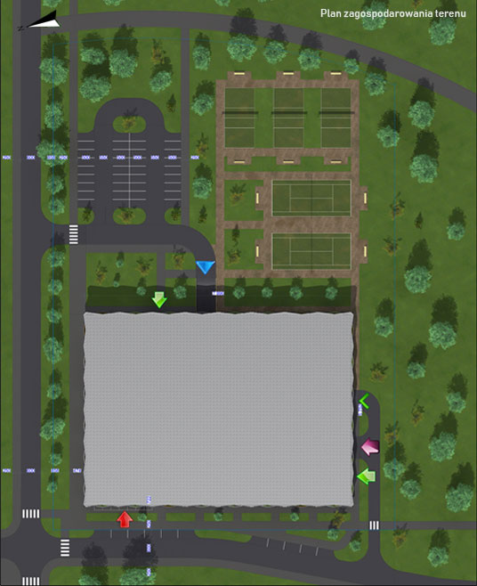
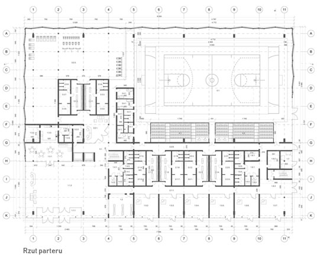
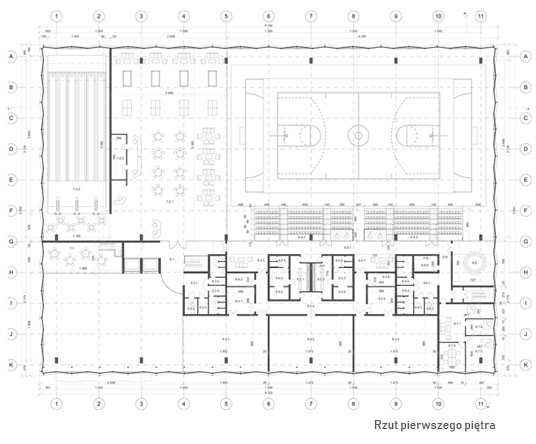
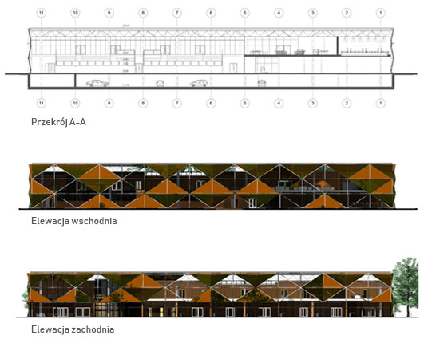
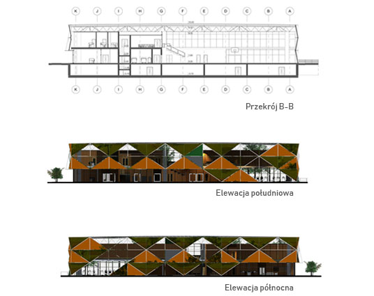
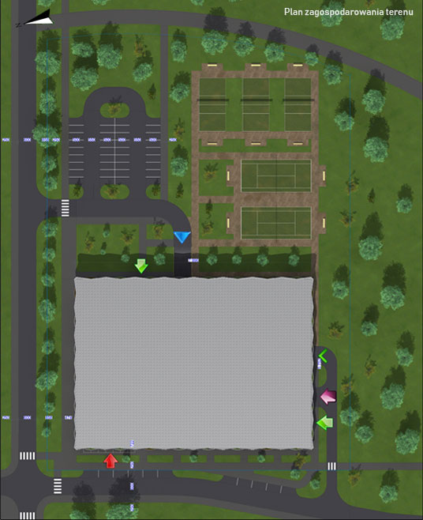
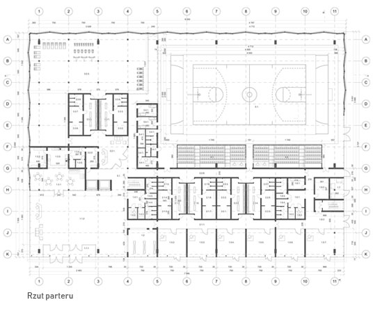
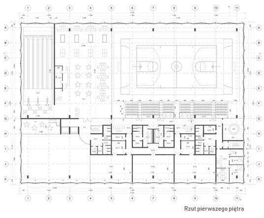
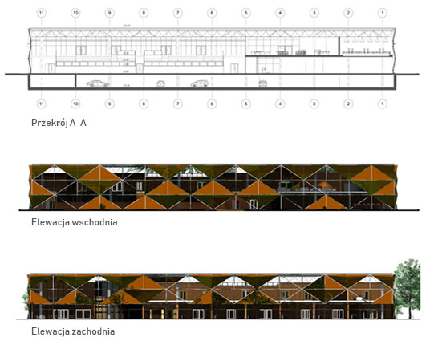
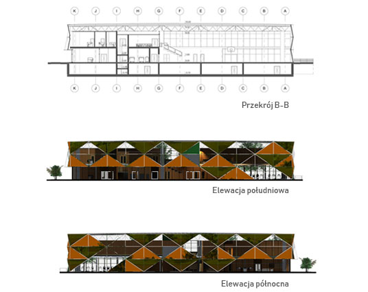

Projekt hotelu w Warszawie na Mokotowie Przy ulicy Sikorskiego Władysława
Projektowany hotel kongresowy jest ekskluzywnym i nowoczesnym projektem, zlokalizowanym w samym sercu Mokotowa, w jednej z najbardziej prestiżowych dzielnic Warszawy. Znajdując się w tak atrakcyjnym miejscu, klienci hotelu będą mogli cieszyć się zarówno cichyzm, zielonym otoczeniem, jak i bliskością centrum miasta. Wybraną okolicę otaczają tereny spacerowe, parki, zbiorniki wodne i ścieżki rowerowe. Na terenie samego hotelu znajdą się trawniki, szpalery drzew i ławeczki. W pobliżu dostępne są takie atrakcje jak tor łyżwiarski Stegny, tor wyścigów konnych Służewiec czy Wodny Park Warszawianka. Hotel jest skąpany w zieleni, a nowoczesna architektura jest luksusowa i estetyczna. Ciekawa forma architektoniczna oraz atrakcyjnie zaaranżowana zieleń z pewnością stworzy unikalny klimat, pewną atrakcje oraz z nowe doświadczenia dla klientów. Jednostki mieszkalne wykończone są z najwyższej jakości materiałów, charakteryzują je funkcjonalne wnętrza oraz reprezentacyjne fasady. Polaczenie bieli i szkła nadaje projektowi niezwykłej elegancji.


Projekt małej hali sportowej w Warszawieś Przy ulicy Poleczki
Główną myślą projektową jest stworzenie przyjaznej, lokalnej hali sportowej dla mieszkańców i przyjezdnych, w której człowiek mógł by zaspokoić swoją potrzebę wysiłku fizycznego, a widzowie mogliby usatysfakcjonować wrodzony instynkt rywalizacji. Koncepcja funkcjonalno-przestrzenna projektu budowlanego Głównym elementem hali sportowej jest boisko o wymiarach 45 na 25 metry, na którym jest możliwość zagrania w takie sporty grupowe jak piłka nożna, piłka ręczna i koszykówka. Na parterze znajduje się duży hol wejściowy który z łatwością pomieści większe grupy (np. szkolne) nie powodując korków, szatnia ogólnodostępna, kawiarnia, siłownia, szatnie dla sportowców oraz pomieszczenia na usługi. Widownia (270 miejsc + 4 miejsca dla niepełnosprawnych) umieszczona na piętrze budynku i jest dostępna z korytarza na pierwszej kondygnacji. Również na pierwszej kondygnacji jest cześć rekreacyjno-rozrywkowa, kręgielnia, sanitariaty, administracja, trzy sale do zajęć typu aerobik, zajęć tanecznych i ćwiczeń “kardio”. Na kondygnacji -1 znajduje się parking podziemny na 118 miejsc samochodowych, 4 miejsca dla niepełnosprawnych oraz pomieszczenia techniczne.
 









Obudowa teatru i szkoła muzyczna w Głogowie
Projekt przedstawia koncepcję architektoniczną odbudowy i rozbudowy dawnego Teatru Miejskiego na potrzeby Szkoły Muzycznej na rynku Starego Miasta w Głogowie. Bryła obiektu jest podyktowana jak najlepszym wykorzystaniem walorów środowiska, kształtem dawnego teatru oraz ideą zapisania melodii w elewacji budynku. Zaprojektowany szklany atrium w środkowej części obiektu, pozwala zachować reprezentacyjną elewacje dawnego teatru oraz połączyć różne strefy szkoły muzycznej, dając ciekawy efekt wizualny, który dodatkowo potęgowany jest grą świateł. Założenie składa się między innymi z 16 pomieszczeń do zajęć indywidualnych, 10 sal do zajęć zespołowych, 5 sal do zajęć zbiorowych teoretycznych, sali do zajęć z rytmiki z zapleczem, 10 sal ćwiczeniowych dla uczniów, sali kameralnej, biblioteki, szatni uczniowskiej, świetlicy.
Projekt przedszkola przy ulicy Gęstej w Warszawie
Projekt przedszkola inspirowany był otaczającym terenem oraz formą pięciokąta. Elewacja obiektu stworzoną została w procesie rozbudowy pięciokąta foremnego strukturą fraktalną. Ta geometria pozwala na tworzenie dużego, wewnętrznego placu zabaw otwartego w stronę parku i oferuje ciekawy widok na otaczający krajobraz. Przedszkole zostało zaprojektowane dla czterech grup szesnaście osobowych, składa się miedzy innymi z strefy sztuki i sportu, stołówki, administracji oraz strefy wejściowej.z
Przekształcenia miejskich terenów poprodukcyjnych - rejon Puławy
Muzeum Żeglugi Wiślanej Celem projektu jest uzyskanie najlepszej pod względem urbanistycznym, architektonicznym, funkcjonalnym i eksploatacyjnym koncepcji urbanistyczno architektonicznej budynku Muzeum Żeglugi Wiślanej Muzeum jest otwarte na Wisłę i basen portu czerniakowskiego. W budynku uwzględniony 30m wspornik. Sale wystawowe jednoprzestrzenne bez słupów o wysokości 15m.